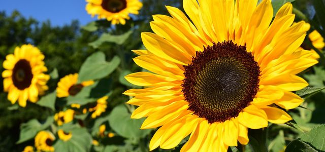

Sonnenblume

Die Sonnenblume ist eine bis zu 2 Meter tief wurzelnde einjährige kultivierte Pflanze. Sie ist sehr photosyntheseaktiv; eine große Pflanze bindet pro Tag das in einem Raum von 100 Kubikmetern vorhandene Kohlendioxid. Allerdings sind die Pflanzen sehr lichtabhängig d. h., die Netto-Photosyntheserate steht in direktem Verhältnis zum Logarithmus der Lichtintensität, deshalb bleiben bereits geringfügig schlechter besonnte Pflanzen wesentlich kleiner. Sie ist eine typische Pflanze warmer Standorte, d. h., sie ist ein Wärmekeimer, sie hat ihr maximales Wachstum bei 20 Grad Celsius und ihre Keimblätter legen sich nachts zusammen.Blütenökologisch sind die Scheinblüten (Pseudanthium) große „Körbchenblumen“, die oft aus über 15.000 Einzelblüten bestehen. Die Blüten sind vormännlich. Die zungenförmigen Randblüten sind steril und haben eine hohe UV-Reflexion. Die Scheibenblüten sind zwittrig. Die Bestäubung erfolgt durch verschiedene Insekten.